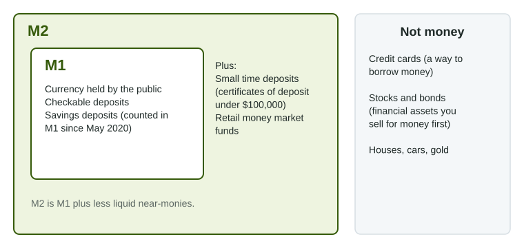

Definition, Measurement, and Functions of Money
Money is whatever people accept as a medium of exchange, use as a unit of account and hold as a store of value.
Part 1 · Hook
Why this matters
Part 2 · Before you start
What this builds on
Part 3 · Prerequisite check
Quick check before you start
1. What is liquidity?
- How easily an asset becomes money without losing value
- How much interest an asset pays
- How risky an asset is
- How many people own an asset
Show the answer
Liquidity is how easily an asset turns into spendable money at full value.
- Correct: How easily an asset becomes money without losing value:
- How much interest an asset pays:
- How risky an asset is:
- How many people own an asset:
2. Which of these is a financial asset?
- A share of stock
- A pizza
- A factory machine
- An hour of labor
Show the answer
A share of stock is a claim on a firm's future income; the others are goods or resources.
- Correct: A share of stock:
- A pizza:
- A factory machine:
- An hour of labor:
Part 4 · See it
See it first

Part 5 · Step by step
How it works, step by step
- Barter needs a double coincidence of wantspeople adopt one thing everyone accepts in trade: money as a medium of exchange
- Everyone accepts the same moneyprices are stated in it, so money becomes the unit of account
- Money keeps its buying power over timepeople can save it, so it works as a store of value, until high inflation erodes it
Part 6 · Key ideas
Key ideas
- Money has three functions: medium of exchange (accepted in payment), unit of account (prices are stated in it) and store of value (it holds buying power over time).
- Fiat money has value because the government declares it money and people accept it; commodity money, such as gold, is valued as a good.
- M1 is currency held by the public, checkable deposits and other deposits you can withdraw at once. M2 adds small time deposits and retail money market funds.
- Credit cards, stocks and bonds are not money: a card is a loan, and stocks and bonds must be sold for money first.
Part 7 · Misconception
A common mistake
The wrong idea: A credit card is money, because you can pay with it.
What actually happens: Paying by credit card is borrowing from the card issuer. The money is the checkable deposit or cash that later pays the bill.
Part 8 · Check yourself
Check yourself
Exam-style questions. Anything you miss goes into your review queue.
1. Which list names the three functions of money?
- Medium of exchange, unit of account, store of value
- Medium of exchange, source of interest, store of value
- Unit of account, store of value, source of credit
- Store of value, measure of output, medium of exchange
Show the answer
Money serves as a medium of exchange, a unit of account and a store of value.
- Correct: Medium of exchange, unit of account, store of value: Right: money is used to pay, to measure value and to save.
- Medium of exchange, source of interest, store of value: Paying interest is not a function of money; currency pays none.
- Unit of account, store of value, source of credit: Credit is borrowing, not a function of money itself.
- Store of value, measure of output, medium of exchange: Output is measured with GDP. The third function is unit of account.
2. Prices in a country rise 40% in one year. Which function of its money is hurt the most?
- Store of value
- Unit of account, because prices are no longer in dollars
- Medium of exchange, because stores refuse payment
- Liquidity, because money takes longer to spend
Show the answer
High inflation erodes the buying power of money held over time, weakening it as a store of value.
- Correct: Store of value: Right: money held for a year buys far less, so people stop holding it as savings.
- Unit of account, because prices are no longer in dollars: Prices are still stated in the currency; they rise often.
- Medium of exchange, because stores refuse payment: People still pay with it, often faster than before, to spend it before it loses value.
- Liquidity, because money takes longer to spend: Money can still be spent at once; it is its value over time that suffers.
3. Why is a credit card not counted as money?
- It is not accepted in enough stores and online shops
- Paying with it is a loan, repaid later with money
- It earns interest for the cardholder
- Its value changes with stock prices
Show the answer
A credit card is a way to borrow. The checkable deposit or currency used to pay the bill is the money.
- It is not accepted in enough stores and online shops: Credit cards are widely accepted; the issue is what paying with one is.
- Correct: Paying with it is a loan, repaid later with money: Right: the card creates a debt to the card issuer; the money is what pays off the bill.
- It earns interest for the cardholder: Credit cards charge the holder interest; they do not pay it.
- Its value changes with stock prices: A card's use does not depend on stock prices; it is a way to borrow.
4. Ana moves $1,000 from her checking account into a one-year certificate of deposit. What happens to M1 and M2?
- M1 rises and M2 is unchanged
- Both fall by $1,000
- M1 falls and M2 is unchanged
- Both are unchanged
Show the answer
Checkable deposits are in M1; small time deposits are in M2 but not M1.
- M1 rises and M2 is unchanged: Checkable deposits fell, so M1 falls, not rises.
- Both fall by $1,000: The $1,000 stays in M2 as a small time deposit, so M2 does not fall.
- Correct: M1 falls and M2 is unchanged: Right: the money leaves M1 but stays inside M2.
- Both are unchanged: Checkable deposits are in M1 and time deposits are not, so M1 falls.
Data
What the people of Tolvia hold
| Asset | Billions of dollars |
|---|---|
| Currency held by the public | 300 |
| Checkable deposits | 500 |
| Small time deposits (certificates of deposit) | 200 |
| Retail money market funds | 150 |
| Shares of stock | 2,000 |
| Unused credit card limits | 400 |
5. Using the table, what is M1 in Tolvia, in billions of dollars?
Type a number. A four-function calculator is allowed, as on the exam.
Show the answer
M1 is the most spendable money: currency held by the public plus checkable deposits, billion.
- Answer: 800
6. Using the table, what is M2 in Tolvia, in billions of dollars?
Type a number. A four-function calculator is allowed, as on the exam.
Show the answer
M2 is M1 plus small time deposits and retail money market funds: billion.
- Answer: 1150
7. Which asset in the table is counted in M2 but not in M1?
- Currency held by the public
- Checkable deposits
- Small time deposits
- Shares of stock
Show the answer
M2 = M1 plus less liquid deposits: small time deposits and retail money market funds.
- Currency held by the public: Currency is the core of M1, and M2 includes all of M1.
- Checkable deposits: Checkable deposits can be spent by card or check, so they are in M1 (and so in M2).
- Correct: Small time deposits: Right: certificates of deposit lock money up for a term, so they are near-money in M2 only.
- Shares of stock: Stock is counted in neither; it is a financial asset, not money.
Part 9 · Summary
Summary
Part 10 · Up next
What comes next
Part 11 · Connections